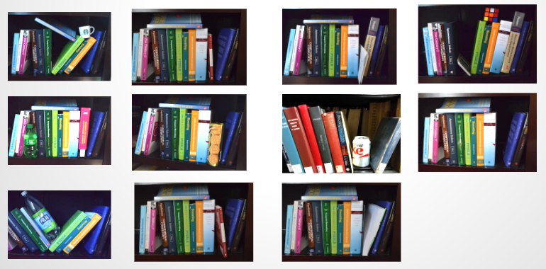

Projects

Thread Library
created a C-based userspace thread and mutex library (as an alternative to NPTL). The preemptive round robin scheduler works on a queue of threads to be scheduled.

Visual Bag of Words
The project’s goal was to build an object classification system by utilizing SIFT for feature detection and a Visual Bag of Words model. The work combined computational photography (specifically, feature detection) with machine learning (classification and clustering).

Contribution Analysis Tool
The project was concerned with objectively analyzing a student’s quantifiable contributions to team projects.